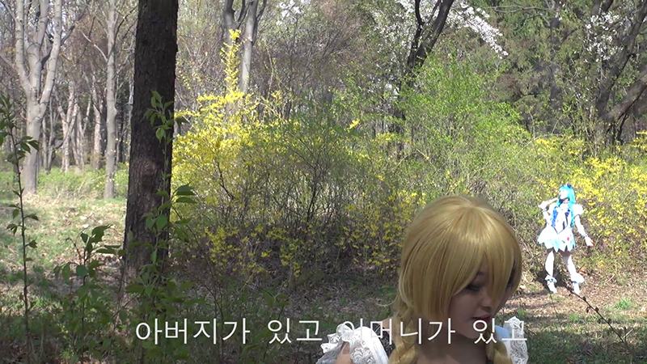
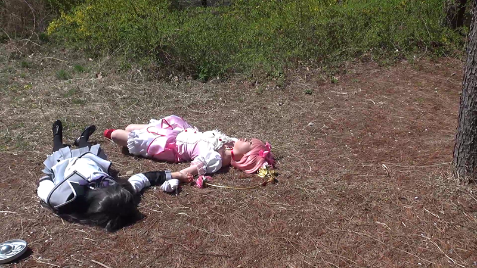
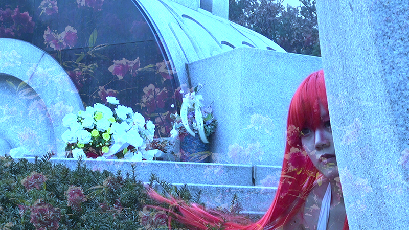
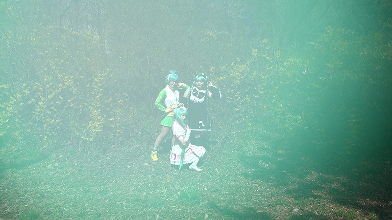
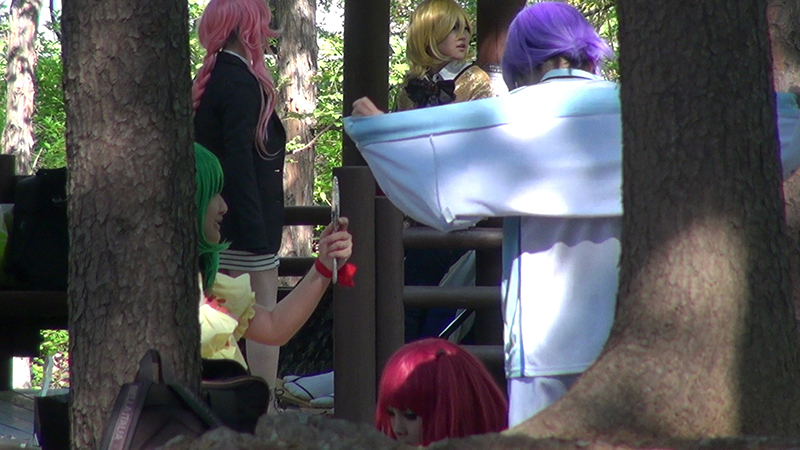

- 2014. 8. 8. 20:00
- 스페이스 필룩스
space FEELUX
- 최윤 Yun Choi
- 최윤은 미학화한 삶과 미술에 대해 탐구한다. 또한, 주변의 재료들로 탄 음식을 만드는 것을 즐긴다.
- <생쇼 Raw Show Part. 1: Myself>(Photo Slideshow), 58'', 2009
- <생쇼 Raw Show Part. 2: My Father>(Photo Slideshow), 2'17'', 2009
- 셀카 찍으며 자폭하기와 다큐멘터리
- <NNN>, 6'29'', 2009
- 누드와 나체의 뻔한 대결
- <녹색식물원 Green Garden>, 7'18'', 2013
관
- 조화롭지 않은 것을 조화롭다고 우기는 통상적 멜로 코드에 하여
- <시민의 숲 Citizen's Forest>, 26'26'', 2014
- 판타지와 사상은 사진과 비석으로 기억되어 만나고, 공원이 숲이 되듯이 시민들은 요정이 된다.
-

-

-

-

-
